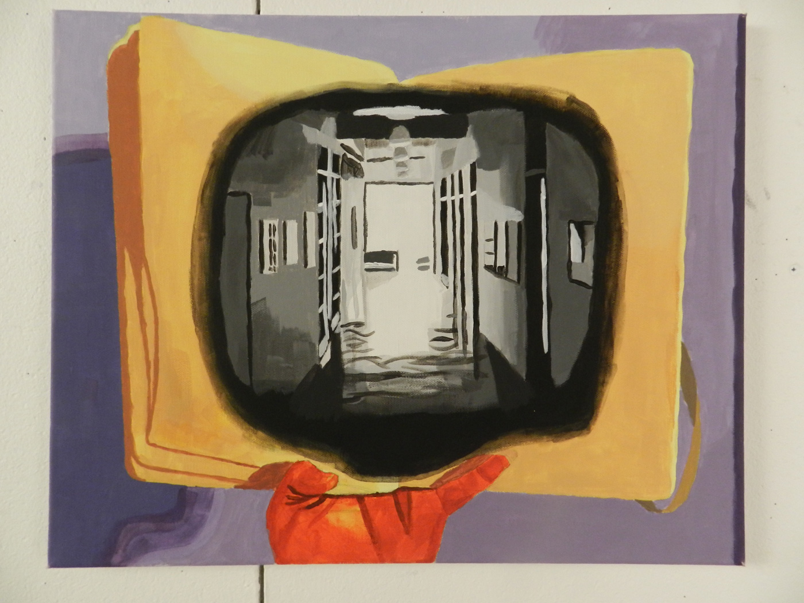

Windows
Acrylic on canvas
Windows was my final project for 2D Design. Over the course of the semester, I had to take pictures of things from real life and use at least one of them as a reference for my final project. As a final touch, I was allowed to make digital and physical edits the image to get the effect I wanted. When I achieved that effect, I took that image and painted it onto a surface that had to be a least 11x14 in.
The image I chose was a combination of two photos I had taken during the semester, the first of a hallway on the second floor of Lord Hall and the second of me holding my sketchbook. After setting up my composition, I used filters and layer masks to get the colors exactly the way I wanted them, and then finally transferred the image to the canvas using acrylic paint.

- Aidan Bauer